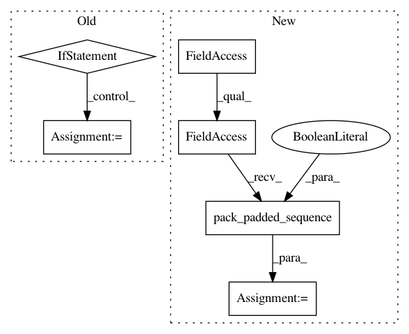

faf3aa876462323f2fa721ebd633752d6489808f,sru/modules.py,SRU,forward,#SRU#Any#Any#Any#,536
Before Change
// unpack packed, if input is packed. packing and then unpacking will be slower than not
// packing at all, but makes SRU usage compatible with nn.RNN usage
orig_input = input
if isinstance(orig_input, PackedSequence):
input, batch_sizes, sorted_indices, unsorted_indices = input
length = input.size(0)
batch_size = input.size(1)
mask_pad = torch.arange(batch_size,
device=batch_sizes.device).expand(length, batch_size)
mask_pad = (mask_pad >= batch_sizes.view(length, 1)).contiguous()
else:
length = input.size(0)
batch_size = input.size(1)
batch_sizes = None
sorted_indices = None
unsorted_indices = None
// The dimensions of `input` should be: `(sequence_length, batch_size, input_size)`.
if input.dim() != 3:
raise ValueError("There must be 3 dimensions for (length, batch_size, input_size)")
if c0 is None:
After Change
batch_size, self.hidden_size)
if isinstance(orig_input, PackedSequence):
prevx = nn.utils.rnn.pack_padded_sequence(prevx, lengths, enforce_sorted=False)
return prevx, lstc_stack
else:
return prevx, lstc_stack
In pattern: SUPERPATTERN
Frequency: 3
Non-data size: 6
Instances
Project Name: asappresearch/sru
Commit Name: faf3aa876462323f2fa721ebd633752d6489808f
Time: 2020-09-18
Author: taolei@csail.mit.edu
File Name: sru/modules.py
Class Name: SRU
Method Name: forward
Project Name: pyprob/pyprob
Commit Name: 9eae70be43bee8dde7fd4c75c2534331a10de6a1
Time: 2017-05-06
Author: atilimgunes.baydin@gmail.com
File Name: infcomp/modules.py
Class Name: Artifact
Method Name: loss
Project Name: Alexander-H-Liu/End-to-end-ASR-Pytorch
Commit Name: 57cf91dbd3d6cdaa1b239320ba693a5b7bfbf02e
Time: 2019-09-25
Author: alexliu36@gmail.com
File Name: src/lm.py
Class Name: RNNLM
Method Name: forward